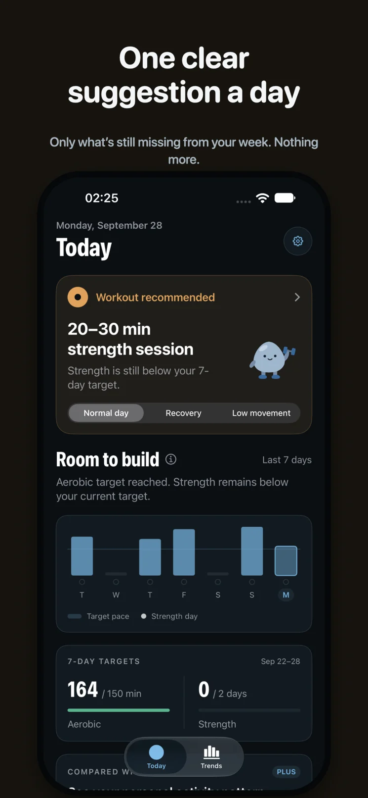
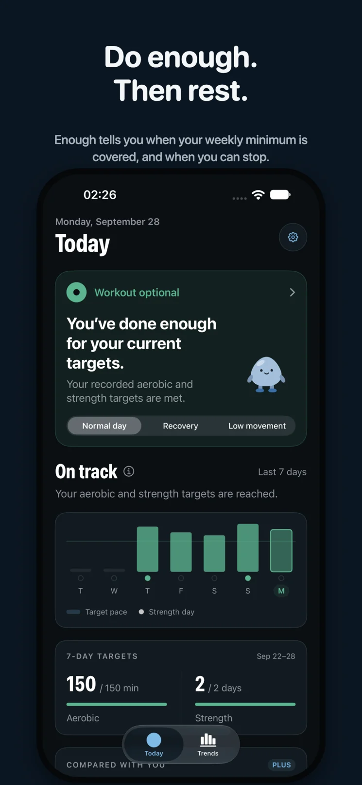
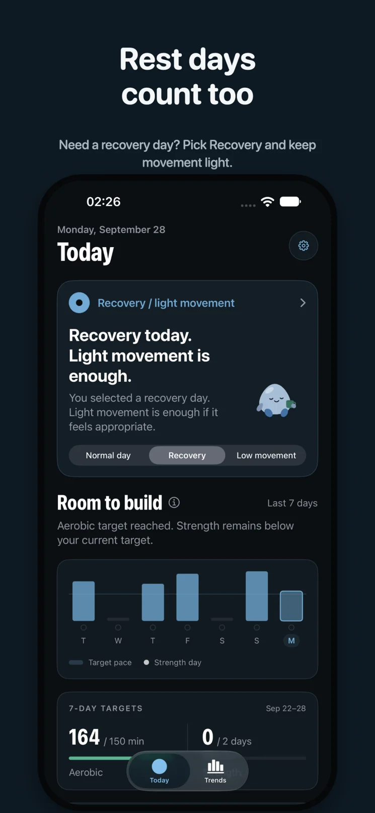
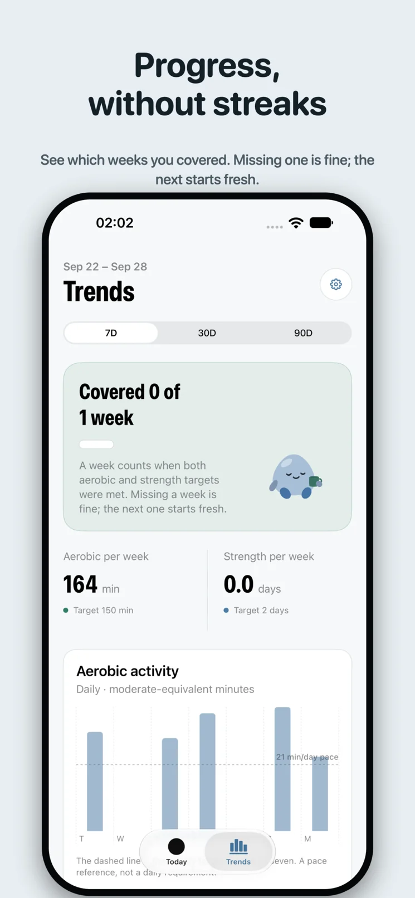
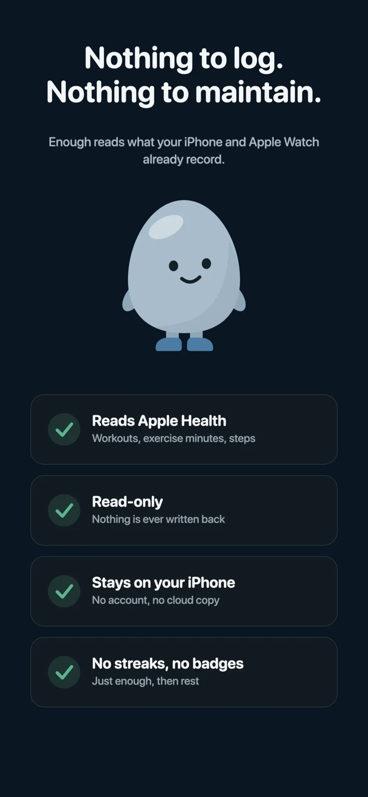
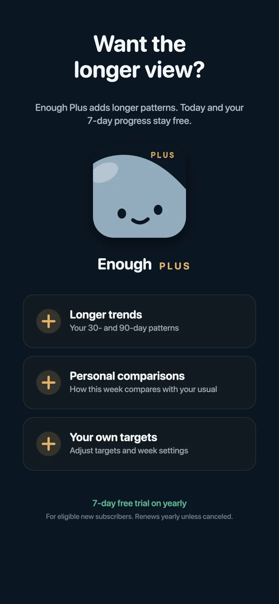

01 / TODAY
One clear suggestion.
See what your week is missing, or whether you've already met your goals.
A simpler activity companion for iPhone
Not every day needs a new record. Enough looks at your Apple Health activity and helps you see where you stand with your weekly movement goals.
No streaks to protect. No daily rings to close.

YOUR WEEK, AT A GLANCEFitness isn't about doing more every single day.
THE IDEA
Enough gives you a practical look at your last seven days, without turning movement into another thing to keep up with.

See what your week is missing, or whether you've already met your goals.

Not every day needs a workout. Some days, light movement or recovery makes sense.

Look back at your activity over time without feeling pushed to outdo yesterday.

A QUIETER KIND OF APP
Enough reads activity from Apple Health, including workouts, steps and exercise minutes. No separate workout diary to keep up to date.
Read our privacy policyENOUGH PLUS
The weekly essentials are free. Plus adds longer trends, personal comparisons and your own targets.
$2.99 / month · $19.99 / year · $49.99 lifetime
Prices shown in USD; local App Store pricing may vary.
Explore Enough on the App Store ↗
MOVE ENOUGH. REST WELL.